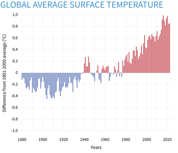
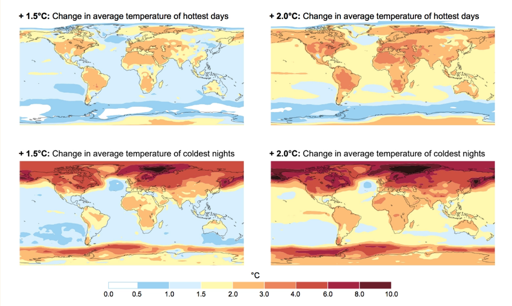
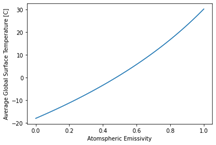

Equations différentielles#
Limites planétaires#
Evolution d’une ressource :#
Auteur : Etienne
Sujet : Equations différentielles - Limites- Stabilité de l’équation
1e |
2e |
3e |
4e |
|---|---|---|---|
x |
On cherche à étudier l’évolution de la quantité d’une ressource qui se renouvelle et qui est consommée, par exemple le bois issu des arbres. On note \(Q\) la quantité initiale et \(q(t)\) la fonction qui décrit la quantité en fonction du temps. On suppose que la ressource se renouvelle avec un taux \(\alpha\) et qu’elle se consomme avec un taux \(\beta\). Chaque année \(t\), on consomme donc \(\beta q(t)\) de la ressource, et une quantité \(\alpha q(t)\) a été produite. On peut écrire que pour tout temps \(t \in \mathbb{R}^+\) l’évolution de la quantité \(q(t)\) est régie par l’équation différentielle suivante :
\( q'(t) = \alpha q(t) - \beta q(t) = (\alpha - \beta) q(t)\)
De quel type d’équation différentielle s’agit-il ? La mettre sous forme canonique.
En notant \(\tau = \alpha - \beta\) et en utilisant les conditions initiales, résoudre l’équation.
Que représente \(\tau\)?
Quelle est la limite de \(q(t)\) en \(+ \infty\) pour \(\tau>0\) ? Pour \(\tau<0\) ? Que se passe t’il pour \(\tau=0\) ?
Expliquer ce que chacun des 3 cas représente et tracer \(q\) en fonction de \(t\) pour chaque cas
Quel est le risque de consommer plus de ressources que ce que l’on produit ? Mathématiquement quelles sont les solutions pour résoudre ce problème ?
En réalité, \(\alpha\) et \(\beta\) dépendent eux aussi du temps, en particulier la consommation qui n’est pas toujours la même. Ces cas-là sont n’ont en général pas de solutions générales. Cependant, est possible de les résoudre à l’ordinateur (voir activité à ce sujet).
Gestion d’une population de nuisibles :#
Auteur : Etienne
Sujet : Equations différentielles - Stabilité de l’équation
1e |
2e |
3e |
4e |
|---|---|---|---|
x |
Certaines espèces sont considérées comme nuisible pour l’Homme, c’est le cas de certains moustiques ou certaines mouches.
Certains pays tentent donc de réguler les populations des nuisibles. Pourtant, ces insectes font partis d’un cycle alimentaire entre proie et prédateurs qu’il faut préserver. Soit \(N\) le nombre initial de nuisible, on note \(f(t)\) la fonction qui décrit l’évolution de la population de nuisibles en fonction du temps. Cette population a un taux de natalité \(\alpha\) et un taux de mortalité \(\beta\).
En l’absence de l’homme, l’évolution de la fonction \(f\) suit l’équation différentielle suivante :
\( f'(t) = \alpha f(t) - \beta f(t) = (\alpha - \beta) f(t) \)
De quel type d’équation différentielle s’agit-il ? La mettre sous forme canonique.
En notant \(\tau = \alpha - \beta\) et en utilisant les conditions initiales, résoudre l’équation.
Faire une hypothèse sur le signe de \(\tau = \alpha - \beta\) et calculer la limite de \(f\) en \(+ \infty\).
Tracer la courbe pour une valeur de \(\tau\) positive.
On suppose maintenant que l’Homme chasse un taux \(\delta\) de nuisible en fonction du temps. La nouvelle équation est donc :
\( f'(t) = \alpha f(t) - \beta f(t) - \delta f(t)= (\alpha - \beta - \delta) f(t) \)
On note maintenant \(\gamma = \alpha - \beta - \delta\). Que signifie \(\gamma\) négatif ?
Réécrire la solution de l’équation différentielle en fonction de \(\gamma\).
Quelle est la limite de \(f\) en \(+ \infty\) si \(\gamma<0\)?
À quoi correspond le cas \(\gamma=0\) ? ( Mathématiquement et dans la vraie vie)
Qualitativement, comment devrait évoluer \(\gamma\) pour avoir une politique de gestion efficace ? Quel est le risque de vouloir gérer une population via la chasse ?
Limite de la croissance d’une population :#
Auteur : Etienne
Sujet : Limite - Equations différentielles
1e |
2e |
3e |
4e |
|---|---|---|---|
x |
Source du modèle: Wikipedia dynamique des populations et Wikipedia modeling population growth
On souhaite décrire l’évolution d’une population dans un environnement donné. On note \(N\) le nombre d’individus initialement et \(f(t)\) la fonction qui décrit l’évolution de la population en fonction du temps. On suppose que l’environnement peut accueillir \(K\) individus en termes de ressources et que la population évolue à un taux \(r\) (taux de naissance moins taux de décés). On peut décrire \(f\) avec l’équation différentielle suivante :
\( f'(t) = rf(t) (\frac{K-f(t)}{K})= r f(t) (1-\frac{f(t)}{K}) \)
Que représente le cas où \(f(t)<K\) ? Quel est le signe de \(f'\) dans ce cas ? Comment va évoluer \(f\) ?
Que représente le cas où \(f(t)>K\) ? Quel est le signe de \(f'\) dans ce cas ? Comment va évoluer \(f\) ?
Cette équation a pour solution en fonction de N :
\(f(t) = \frac{K N e^{rt}}{K + N \left( e^{rt} - 1\right)} = \frac{K}{1+\left(\frac{K-N}{N}\right)e^{-rt}}\)
Calculer la limite de la fonction en \(+ \inf\). Commenter. Le graphique suivant montre une solution de l’équation différentielle étudiée plus haut :
\(K\) représente la limite du nombre d’individus avec la production des ressources d’un environnement. Une population peut dépasser \(K\) en stockant et en consommant plus de ressourses que l’environnement peut en fournir. Dans ce cas, on observe un dépassement de la valeur de K. Comme les ressources stockées ne sont pas éternelles, on obtient des oscillations du nombre d’individus comme sur la courbe ci-dessous :
Placer sur le graphique \(N\) le nombre initial d’individu et \(K\). Repérer des zones où \(f(t)<K\) , \(f(t)>K\) .
Une population peut-elle indéfiniment consommer plus de ressources qu’elle n’en produit ?
Note : À comparer avec une croissance infinie : \(f'(t) = rf(t)\) avec \(r>0\). Possibilités de continuer l’activité en réalisant une simulation sur la résolution de l’équation (via Grapher, Python ou autre).
The Greenhouse effect and Earth’s Temperature Model#
Auteur : Cameron
Sujet : Equations différentielles
1e |
2e |
3e |
4e |
|---|---|---|---|
x |
Climate change is a phenomenon which most people have become very aware of in recent years. Although the Earth is subject to natural warming and cooling cycles, the warming that the planet is experiencing now has been attributed to human intervention, and specifically, the burning of fossil fuels for energy. Through this exercise, we aim to explore this phenomenon, and discover exactly how the Earth’s temperature is warming due to this human intervention, what implications it has on the future climate, and how we can lessen the negative impact.
The Simplest Climate Model#
In order to understand how the climate is affected by human activity, we need to develop a model of the Earth’s temperature. We’ll start with the simplest case by considering the Earth to be a spherical black body absorbing radiation from the sun. We begin with a radiation balance problem where the energy absorbed by the Earth must be equal to the energy emitted (equation 1)
(1) \(P_a=P_e\)
These terms are further defined by equations 2 and 3
(2) \(P_a=\alpha\cdot S \cdot A_n\)
(3) \(P_e = \epsilon \cdot \sigma \cdot T^4 \cdot A_{tot}\)
Where \alpha is the solar absorptivity of the Earth, S is the solar energy reaching the Earth, and A_n is the surface area of the earth which is perpendicular to the sun (i.e. a circular cross section). In equation 3, ε_e is a measure of the emissivity of the earth, σ is the Stefan-Boltzmann constant, T is the temperature of the Earth, and A_tot is the total surface area of the planet (which we will model as a perfect sphere).
Using equations 1-3 and the area equations for a circle and a sphere, solve for the temperature of the Earth (T) using algebraic principles.
Once solved, the equation should look like this: (4) \(T = \left[ \frac {s\alpha} {4\epsilon\sigma}\right ]^{1/4}\) Here, we are assuming the Earth is a black body which means we assume it absorbs all infrared energy. Therefore, the emissivity factor, ϵ may be set equal to 1.
Solve this equation using the following values for the constants:
S \(\left[\frac{W}{m^2}\right]\) |
a [-] |
ϵ [-] |
σ \(\left[\frac{W}{\frac{m^2}{K^4}}\right]\) |
|---|---|---|---|
\(1370\) |
\(0.3\) |
\(1\) |
\(5.67*10^{-8}\) |
After solving this equation, you should see that the temperature of the Earth is around -18 degrees Celsius. Intuitively, we know that this number is significantly lower than the real temperature of the earth. This is due to the Greenhouse Effect.
Sources:
Pennsylvania State University. (n.d.). Incoming Solar Radiation and the Earth’s Energy Balance. Retrieved from this link.
The Greenhouse Effect#
You have likely heard of the Greenhouse Effect in your science courses; it is the reason the surface of the Earth is warm enough to be inhabitable. The atmosphere acts as the walls of a greenhouse, letting the suns energy in while also making it more difficult for it to escape We will now attempt to account for this effect and change our model to better reflect reality. We can refer to the temperature of the earth without an atmosphere and modeled as a black body as T_e (effective emission temperature). If we include another algebraic term which introduces the atmosphere and its effects on trapping heat, we come to the following equation.
(5) \(T = \left[ \frac {s_0\alpha} {4\sigma} \frac{1} {1-\frac {\epsilon_a}{2}}{}\right ]^{1/4}\)
Now, look at this equation, and notice the first term in parentheses. You should be able to simplify using Equation 4. Explain the exponent rule which helps you to do this.
After simplifying, you should have gotten the following:
(6) \(T_s = T_e\left[\frac{1} {1-\frac {\epsilon_a}{2}}{}\right ]^{1/4}\)
Here, we see that our original equation has been modified by a term which is dependent on the emissivity of the atmosphere.
Remember that if there was no atmosphere, the temperature would be defined by T_e. Explain/Demonstrate why we can define the Earth’s temperature using equation 4 if the atmosphere didn’t exist (i.e. ϵ=0)
Now given that the emissivity of the atmosphere is 0.78, solve for the true surface temperature of the earth.
After solving, you will notice that the average temperature of the earth is about 15 degrees Celsius. This is about 1 degree warmer than the average global temperature in the 20th century, an increase that many climate scientists have contributed to human intervention.


Figure 1: Yearly surface temperature compared to the 20th-century average from 1880 to 2022. Blue bars indicate cooler-than-average years; red bars show warmer-than-average years. NOAA Climate.gov graph, based on data from the National Centers for Environmental Information. link.
Now while this increase in temperature on the scale of single degrees may not seem significant, it could dramatically affect the global climate. This temperature is representative of the global average, and there is significant range in temperature from the hottest to the coldest places. Although we may experience slight variations in climate, a large portion of the warming is felt by arctic regions near the poles. Large increases in temperatures for these areas can be reflected by smaller increases in the global average.

Figure 2: Intergovernmental Panel on Climate Change Special Report on Global Warming of 1.5º Celsius (2.7º Fahrenheit). link
With regards to equation 6, identify the parameter which could cause a change in the global average surface temperature over time. (The surface temperature is a function of what variable?)
In looking at the equation, you likely identified that the only parameter which human intervention may have effected is ϵ, the emissivity of the atmosphere.
Solve the equation for varying levels of emissivity, and see if you can identify a relationship between the emissivity and the global temperature.
Notice that as the emissivity approaches 1, the global temperature increases to 30 degrees Celsius.

Sources:
Bohren, Craig F.; Clothiaux, Eugene E. (2006). “1.6 Emissivity and Global Warming”. Fundamentals of Atmospheric Radiation. Chichester: John Wiley & Sons. pp. 31–41. ISBN 978-3-527-40503-9.
Petty, Grant W. (2006). “6.4.3 Simple Radiative Models of the Atmosphere”. A First Course in Atmospheric Radiation (2nd ed.). Madison, Wisconsin: Sundog Pub. pp. 139–143. ISBN 978-0-9729033-1-8.
Want to add a last section which implements linear algebra